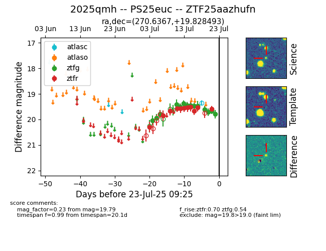

Target ZTF25aazhufn at 2025-07-23 11:48, see:
FINK: fink-portal.org/ZTF25aazhufn
Lasair: lasair-ztf.lsst.ac.uk/objects/ZTF25aazhufn
ALeRCE: alerce.online/object/ZTF25aazhufn
TNS: wis-tns.org/object/2025qmh
YSE: ziggy.ucolick.org/yse/transient_detail/2025qmh
alt names
ZTF25aazhufn (ztf,fink)
2025qmh (tns,yse)
PS25euc (panstarrs)
coordinates:
equatorial (ra, dec) = (270.6367,+19.82849)
galactic (l, b) = (45.8619,+19.38560)
photometry
last ztfg=19.79, ztfr=19.59
14 ztfg, 11 ztfr detections
